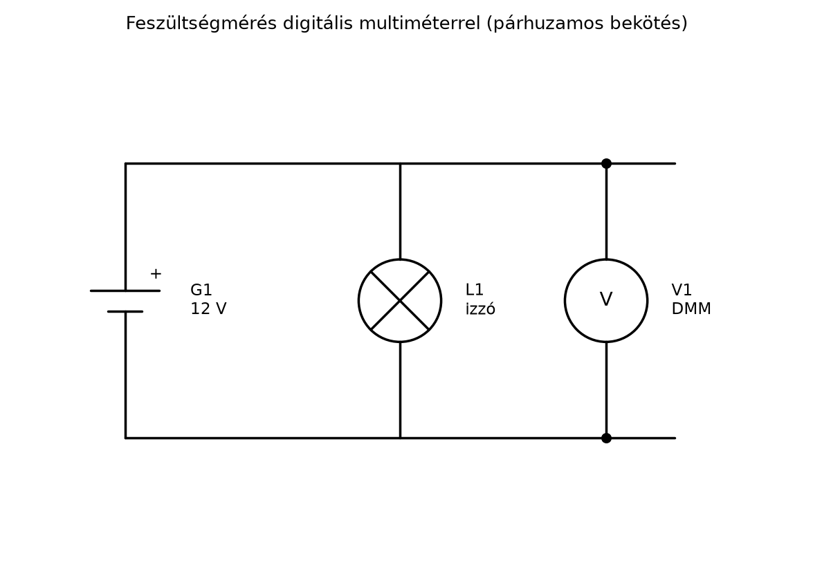

Képzeld el, hogy egy autó hidegindításkor nagyon lassan forgatja a motort. A feszültségmérővel mért akkumulátorfeszültség üres állapotban 12,4 V – ez önmagában még „elfogadhatónak” tűnhet. A tapasztalt szerelő azonban nemcsak feszültséget mér, hanem a lakatfogóval indítás közbeni áramot és a feszültségesést is ellenőrzi. A mérés csak akkor ad használható diagnózist, ha tudod, milyen műszert válassz, milyen méréshatáron, mekkora hibával mértél, és hogyan csatlakoztasd a műszert a jármű áramköréhez. Ebből az alfejezetből a méréstechnikai alapokat, a digitális multiméter és a DC-lakatfogó biztonságos használatát tanulod meg.
Rajzoljuk meg azt a legalapvetőbb járművillamossági mérési helyzetet: feszültséget mérünk digitális multiméterrel egy fogyasztón, például egy izzón, az akkumulátor feszültségén.

A rajzon a feszültségmérő párhuzamosan kapcsolódik a mérendő fogyasztóval: a műszer „fent” a plusz ágra, „lent” a testre csatlakozik. Ez az ábrázolás rögtön megmutatja a feszültségmérés alapszabályát: feszültséget mindig két pont között mérünk, ezért a voltmérőt a mérendő szakasszal párhuzamosan kötjük be.
Definíció. A mérés olyan megfigyelési tevékenység, amelynek során egy fizikai mennyiség értékét összehasonlítjuk egy ismert mértékegységgel, és az eredményt számértékkel, mértékegységgel, valamint mérési bizonytalansággal adjuk meg.
Definíció. A mérőműszer a mérés céljára kialakított eszköz vagy rendszer. Járműjavítási gyakorlatban leggyakrabban analóg mutatós vagy digitális műszereket használunk. A digitális multiméter (DMM – digital multimeter) feszültséget, áramot, ellenállást és gyakran más jellemzőket is mér, az eredményt számkijelzőn mutatja.
Definíció. A mérési hiba a mért érték és a valós (helyes) érték különbsége:
ahol a mért érték, a valós érték. A hibát a mért értéktől és a valós értéktől függően abszolút vagy relatív formában szokás megadni.
Definíció. Az abszolút hiba maga a különbség, a mért mennyiséggel azonos mértékegységben. A relatív hiba az abszolút hiba és a valós érték hányadosa, általában százalékban:
A műszerek pontossági adatai gyakran nem egyetlen számot, hanem hibahatárt adnak meg: a valódi érték a mért érték körüli, megadott intervallumban van.
Összefüggés. Az analóg mutatós műszerek pontossági osztálya azt mutatja, hogy a megengedett legnagyobb abszolút hiba a méréshatár végértékének hány százaléka:
ahol a méréshatár végértéke. Például egy 1,5 pontossági osztályú, 20 V végértékű feszültségmérő abszolút hibahatára:
Ha ezzel 5 V-ot mérünk, a relatív hibahatár . Ebből is látszik, hogy a méréshatárt úgy kell választani, hogy a mért érték a műszer felső tartományába essen, mert a pontosság a méréshatár végértékéhez van kötve.
Az ábra a fejezet három számpéldáját mutatja: az 1,5 osztályú, 20 V-os analóg műszer 5 V-nál 6 %-os, a 30 V-os méréshatáron 10 V-nál 4,5 %-os relatív hibahatárt ad, a ±(0,5 % + 2 digit) pontosságú multiméter 12,46 V-nál ±0,08 V-ot (kb. 0,66 %). A HTML-kiadás kalkulátorában a pontossági osztály, a méréshatár, a digitális hibaadat és a mért érték állítható; a kijelzés az abszolút és relatív hibahatárt, valamint a valós érték tartományát (pl. 12,38–12,54 V) adja.
Definíció. A felbontás a digitális műszer által megjelenített legkisebb értékkülönbség, amelyet a kijelző még elkülönít. Például egy 2000 count (3½ számjegyű) kijelző a 20 V-os méréshatáron 10 mV-os felbontást adhat. A méréshatár az a legnagyobb bemeneti érték, amelyet az adott tartományon a műszer még mérni képes.
Definíció. A műszer belső ellenállása az a bemeneti ellenállás, amelyet a mérőműszer a mérendő áramkör felé mutat. Feszültségmérésnél a digitális multiméter belső ellenállása jellemzően 10 MΩ, ami azt jelenti, hogy a műszer csak nagyon kis áramot vesz fel, és általában nem terheli számottevően a mérendő áramkört. Áramméréskor a műszer bemeneti ellenállása a beépített sönt miatt nagyon kicsi, hogy a mért áramkör feszültségesését alig növelje.
Definíció. A DC-lakatfogó olyan árammérő, amely az áram mágneses terét érzékeli, így az áramköri vezeték megszakítása nélkül méri az egyenáramot (DC). A készülék pofái a vezeték köré záródnak.
A mérőműszerek felépítése az analóg és digitális eszközöknél eltérő, de a mérési cél közös: a bemeneti jelet olyan formára alakítani, amelyet a kijelző megjeleníthet.
A digitális multimétereken általában a következő mérési módok találhatók:
| Üzemmód | Mérendő mennyiség | Bekötés | Jellemző adat (példa) |
|---|---|---|---|
| V DC | egyenfeszültség | párhuzamosan | bemeneti ellenállás ~10 MΩ |
| V AC | váltakozó feszültség | párhuzamosan | True RMS vagy átlagérték |
| A DC | egyenáram | sorosan | belső sönt, pl. 200 mV esés |
| A AC | váltakozó áram | sorosan | |
| Ω | ellenállás | áramtalan áramkörben | feszültségmentes áramkörben |
| dióda/continuity | dióda nyitófeszültség, folytonosság | alkatrészen | áramtalan áramkörben |
Az értékek tanulási példák (ellenőrizendő: a konkrét gyártói kézikönyvben).
A feszültségmérőt tehát párhuzamosan, az árammérőt sorosan kell bekötni. Az árammérő söntje miatt a bemeneti ellenállás kicsi, ezért ha véletlenül párhuzamosan kötöd, a műszer belső biztosítéka kiolvadhat, és a mért áramkör rövidzárlatot kaphat.
Az (a) rajzrész számozása: 1 kijelző, 2 méréshatár-/módválasztó, 3 COM aljzat, 4 VΩ aljzat, 5 mA/µA aljzat, 6 biztosított 10 A-es aljzat, 7 CAT-besorolás. A (d) rajzrész a leggyakoribb, a műszer biztosítóját kiolvasztó hibát mutatja: a 10 A-es aljzatba dugott zsinórral párhuzamosan mérni rövidzár a söntön át. A HTML-kiadásban a mód, az aljzat és a bekötés választható, és a szimuláció jelzi, helyes-e a mérés.
DC-lakatfogó. A DC-lakatfogó a vezetőben folyó áram által keltett mágneses teret méri. A leggyakoribb kivitel Hall-érzékelőt használ a pofák között: a mágneses térrel arányos Hall-feszültséget dolgozza fel, és áramértékké alakítja. A pofák kinyithatók, így a műszert a mérendő vezeték köré kell zárni, anélkül, hogy a csatlakozót megbontanád. A nagyobb áramokat, például az indítómotor áramát így gyorsan meg lehet mérni.
A DC-lakatfogó nulla beállítást igényel: amikor a pofák üresek, a kijelzőn nullát kell mutatnia. A méréskor csak egyetlen vezetéket szabad átfogni, mert ha egy kábelköteg pozitív és negatív erét egyszerre fogod át, az ellentétes áramok mágneses tere kioltja egymást, és hibásan nullát mérsz.
A mérési hibákat három csoportba sorolhatjuk:
Szabály. A mérési eredményt soha ne úgy írd le, hogy „pontosan 12 V”. Mindig tüntesd fel a méréshatárt, a műszer pontossági adatából számítható hibahatárt, és ha szükséges, a mérés körülményeit. A járműdiagnosztikában a gyártói határértékekhez is hibahatárral együtt viszonyítunk.
A digitális multiméterek pontossági adata tipikusan
±(a% rdg + n digit) alakú. Az a% rdg azt
jelenti, hogy a leolvasott érték százalékát vesszük, az
n digit pedig a legkisebb kijelzett egység n-szeresét. A
példát lásd lentebb.
Méréshatár-bővítés. Egy alapműszer, például egy mutatós lengőtekercs, csak kis áramot tud közvetlenül mérni. A feszültségméréshatár bővítéséhez előtétellenállást, az áramméréshatár bővítéséhez söntöt kapcsolunk.
Legyen az alapműszer végkitérési árama , belső ellenállása , így a belső feszültségesése:
Ha a feszültségmérővel feszültséget akarunk mérni, az előtétellenállás:
Ha az árammérővel áramot akarunk mérni, a söntellenállás:
A gyakorlatban a sönt feszültségesése gyári multimétereknél tipikusan 100–200 mV a méréshatárnál (ellenőrizendő: gyártói adat).
Áram- és feszültségváltó. Váltakozó áramnál a méréshatárt transzformátorral is bővíthetjük. Az áramváltó a nagy primer áramot a menetszám-arány szerint kis szekunder árammá alakítja (); az AC-lakatfogó áramváltó elvű, a DC-áramot csak Hall-elvű lakatfogó méri. A feszültségváltó a nagy feszültséget kis, mérhető feszültséggé alakítja. Az áramváltó szekunder körét üzem közben nyitni tilos, mert veszélyes nagy túlfeszültség lép fel; a szekunder oldalt mindig rövidre kell zárni vagy a mérőműszeren át zárva kell tartani.
Előírás. A mérőműszerek biztonságos kialakítását az IEC 61010 szabványsorozat írja le. A műszeren és a mérőzsinóron feltüntetett mérési kategória (CAT I, CAT II, CAT III, CAT IV) azt adja meg, hogy a műszer milyen villamos hálózati környezetben és mekkora tranziensek ellen véd. A járművillamossági méréseknél általában legalább CAT III 600 V, nagyfeszültségű járműrendszeren a gyártó által előírt, jellemzően CAT III 1000 V besorolású műszer és zsinór szükséges (ellenőrizendő: az adott mérőeszköz és a gyártói javítási utasítás szerint).
A mérési kategóriák (IEC/MSZ EN 61010-1; ellenőrizendő: a hatályos kiadás) azt jelzik, hol szabad a műszert használni, és mekkora tranzienst bír; nem a mérhető tartós feszültség a lényeg, hanem a hálózat forrásimpedanciájától függő rövidzárlati energia és a tranziens:
| Kategória | Környezet | Példa |
|---|---|---|
| CAT I | védett, hálózattól elválasztott elektronikai áramkörök | elektronikai mérések leválasztott áramkörön |
| CAT II | dugaszolóaljzatról táplált készülékek | háztartási gép, szerszámgép csatlakozása |
| CAT III | épületvillamos hálózat, elosztók | műhelyi elosztószekrény, fix bekötésű gépek |
| CAT IV | az épület betáplálási pontja | fogyasztásmérő, csatlakozó szekrény |
A jármű 12 V-os fedélzeti hálózata nem hálózati kör, ezért a CAT-kategória ott nem a feszültségszint miatt fontos; a CAT III/600 V-os műszer a műhelyi 230/400 V-os mérésekhez és a nagyfeszültségű (HV) járművön végzett méréshez is biztonsági tartalékot ad (ellenőrizendő: gyártói előírás).
Figyelem. A multiméter CAT-besorolása önmagában nem elegendő, ha a mérőzsinór nem ugyanolyan kategóriájú. A rossz, repedt, kopott szigetelésű zsinór nagyfeszültségű környezetben áramütést okozhat. Mérés előtt mindig ellenőrizd a zsinórok, csatlakozók, a műszer házának állapotát.
Tilos. Ellenállást, folytonosságot vagy diódát mérni feszültség alatt lévő áramkörben. A mérésre használt belső áramforrás a műszerre és a vizsgált áramkörre is kárt tehet, és hibás eredményt adsz.
Tilos. Az árammérőt (A-bemenet) feszültségmérőként, a forrással párhuzamosan bekötni, vagy az árammérő zsinórját terhelés alatt feszültségmérésre átdugni. Előbb áramtalanítsd az áramkört, és csak utána dugd át a mérőzsinórt a másik bemenetre.
Adott: digitális multiméter a 20 V DC méréshatáron, a felbontás 10 mV, a gyári pontosság . A kijelzett érték .
Keresett: a mért érték hibahatára.
Számítás:
A 2 digit a 10 mV-os felbontás mellett:
A teljes hibahatár:
Eredmény: a feszültség . A valós érték tehát körülbelül 12,38 V és 12,54 V között van. Ez szemlélteti, hogy a 12,46 V sem „pontos”, hanem mérési bizonytalansággal terhelt.
Adott: alapműszer , .
Keresett: mekkora előtét kell 10 V-os feszültségméréshatárhoz, és mekkora sönt kell 10 A-es áramméréshatárhoz?
Számítás az előtétre:
A belső feszültségesés:
A feszültség-áttétel:
Az előtétellenállás:
Ellenőrzés: a teljes ellenállás , 10 V feszültség mellett az áram . ∎
Számítás a söntre:
Az áram-áttétel:
A söntellenállás:
Gyakorlatilag 10 mΩ. A sönt feszültségesése 10 A esetén:
A sönt teljesítményvesztesége:
Ezért árammérésnél teljesítménysöntöt vagy a műszer gyári söntjét kell használni. ∎
Adott: két ellenállásból álló feszültségosztó, . A feszültséget egy bemeneti ellenállású voltmérővel mérjük.
Keresett: a mért feszültség és a terhelő okozta hiba.
Számítás: ideális esetben a felezőpont feszültsége:
A műszer párhuzamosan kapcsolódik -vel, ezért az eredő:
A mért feszültség:
Az abszolút hiba:
A relatív hiba:
Tanulság: minél kisebb a műszer belső ellenállása a mérendő áramkör ellenállásához képest, annál nagyobb a terhelő hiba. A digitális multiméter 10 MΩ bemeneti ellenállásánál ez a hiba itt már elhanyagolható lenne.
Minden mérés előtt ellenőrizd a műszert és a mérési összeállítást. Az alábbi lista segít elkerülni a felesleges hibás méréseket.
Valós eset. Egy ügyfél azzal hozza a személyautóját, hogy az indítómotor lassan forgat, bár az akkumulátor üres feszültsége 12,3 V, ami külsőre nem tűnik vészesnek. A szerelő a digitális multimétert feszültségmérésre állítja, és indítás közben méri az akkumulátor kapcsain a feszültséget. Azt látja, hogy a kapocsfeszültség 12,3 V-ról 10,6 V-ra esik, a DC-lakatfogóval mért indítóáram viszont csak 110 A, jóval kisebb a szokásosnál (ellenőrizendő: az adott indítómotor gyártói áramfelvétele). A kis áram és a viszonylag magas kapocsfeszültség együtt nagy soros ellenállásra utal a körben: nem az akkumulátor a hibás, hanem valahol a nagyáramú útban van nagy átmeneti ellenállás. A szerelő ezután feszültségesést mér a pozitív és a test oldalon. A test oldalon 1,2 V-ot talál a megengedett 0,3 V helyett (ellenőrizendő: gyártói határérték). A testcsatlakozás javítása után az indítóáram 200 A fölé nő, az indítómotor gyorsan forgat, és a test oldali feszültségesés 0,2 V alá csökken.
Tanulság: a mérés nemcsak egy szám leolvasása, hanem az összetartozó áram- és feszültségadatok együttes értelmezése.
Biztonsági korlát. A feladat tanműhelyi környezetre, oktató felügyeletére és a gyártói javítási utasítás betartására vonatkozik; a megadott értékek tanulási példák. Nagyfeszültségű (HV) járműrendszeren csak arra kiképzett, jogosult személy dolgozhat.
A lezárt jármű nyugalmi áramfelvételének megállapítása, hogy kiderüljön, van-e rendellenes fogyasztás.
A rajz a 2–3. lépést mutatja: a (b) képen a zárt pofák közepén egyetlen negatív kábel halad át; a (c) képen a teljes kábelköteg oda- és visszavezetőjének árama kioltja egymást (a kijelző ~0 A-t mutat), a (d) képen a nyitott pofa hamis értéket ad, az (e) kép a narancssárga HV-kábel tilalmát jelzi.
A feszültségmérő soros bekötése. Ilyenkor a voltmérő nagy belső ellenállása miatt a körben alig folyik áram, a fogyasztó nem üzemel, és a műszer a forrás üres feszültségéhez közeli értéket mutat. Helyesen: a voltmérőt párhuzamosan kösd a mérendő szakasszal.
Az árammérő párhuzamos bekötése. Ez rövidzárlatot okoz, a műszer biztosítéka kiolvadhat, és a vizsgált áramkör megsérülhet. Helyesen: az árammérőt sorosan kösd be, és mérés előtt ellenőrizd a bemeneteket.
A lakatfogóval a teljes kábelköteget fogják át. A pozitív és negatív vagy a különböző fogyasztók áramai kiolthatják egymást, így a műszer hibásan alacsony vagy nulla áramot mutat. Helyesen: mindig csak egy vezetéket fogj át.
A mérési hiba figyelmen kívül hagyása. „12,46 V” helyett azt gondolni, hogy ez pontos érték. Helyesen: a műszer hibahatárával együtt add meg az eredményt, és a határértéket is ezzel a bizonytalansággal hasonlítsd össze.
Rossz méréshatár választása. Analóg műszernél a skála alsó harmadában a leolvasási hiba nagy. Helyesen: válassz olyan méréshatárt, ahol a kitérés a skála felső kétharmadában van; digitálisnál az auto-range használata javasolt.
CAT III 1000 V felirat a
multiméteren?1. feladat (A)
Definiáld az abszolút és a relatív mérési hibát. Számítsd ki mindkettőt,
ha a valós feszültség 12,00 V, a mért feszültség pedig 11,82 V.
2. feladat (A)
Egy analóg feszültségmérő pontossági osztálya 1,5, a méréshatár 30 V.
Mekkora a lehetséges legnagyobb abszolút hiba? Mekkora a relatív hiba,
ha 10 V-ot mérünk?
3. feladat (B)
Egy alapműszer végkitérési árama 100 µA, belső ellenállása 1 kΩ.
Számítsd ki a szükséges előtétellenállást 20 V-os
feszültségméréshatárhoz. Számítsd ki a szükséges söntellenállást 10 A-es
áramméréshatárhoz. Ellenőrizd a sönt feszültségesését.
4. feladat (B)
Egy 12 V-os feszültségosztó két soros ellenállásból áll:
és
.
A felezőpont feszültségét egy 1 MΩ bemeneti ellenállású
feszültségmérővel mérjük. Mekkora a mért feszültség? Mennyi a terhelő
hiba százalékban az ideális 6 V-hoz képest?
5. feladat (C)
Magyarázd el, miért előnyösebb egy 10 MΩ bemeneti ellenállású digitális
multiméter a motorvezérlő érzékelőinek feszültségmérésénél, mint egy
régi, 20 kΩ/V érzékenységű analóg feszültségmérő. A magyarázatban
használj egy konkrét, számolható példát.
6. feladat (D)
A szerelő az indítómotor áramát DC-lakatfogóval akarja mérni, de a
műszer 0 A-t mutat, miközben az indítómotor hallhatóan forgat. Sorolj
fel legalább három lehetséges okot, és mindegyikhez add meg a
teendőt.
Hamis. A feszültségmérőt párhuzamosan kötjük, mert két pont közötti potenciálkülönbséget mér, és nagy belső ellenállása miatt alig terheli a kört.
Az abszolút hibahatár:
A relatív hibahatár:
A műszer és a mérőzsinór az IEC 61010 szerinti III. túlfeszültség-kategóriába tartozik, és névleges egyenfeszültségre legfeljebb 1000 V-ig használható a megadott környezetben. A járműjavításban a nagyfeszültségű rendszeren a gyártó által megadott kategóriájú műszert kell használni.
Mert az ellenállásméréshez a műszer belső áramot bocsát ki. Ha az áramkör feszültség alatt van, a külső feszültség károsíthatja a műszert, illetve a mért érték hamis, mert a külső áram a mérőáramra szuperponálódik.
Nullát mutat, mert a két ellentétes irányú áram mágneses tere kioltja egymást. Ezért mindig csak egy vezetéket fogj át.
Például: a mérőzsinór folytonosságának és szigetelésének ellenőrzése, a műszer elemének ellenőrzése, ismert feszültség mérése, a méréshatár és a CAT-besorolás ellenőrzése.
1. feladat (A)
Az abszolút hiba:
.
A relatív hiba:
.
A negatív előjel arra utal, hogy a műszer alulmért.
2. feladat (A)
Az abszolút hibahatár:
A relatív hibahatár 10 V mérésnél:
3. feladat (B)
Belső feszültségesés:
Feszültség-előtét:
Sönt:
A sönt feszültségesése 10 A-nél:
4. feladat (B)
A párhuzamos eredő:
A mért feszültség:
A hiba:
Relatívan:
5. feladat (C)
A feszültségmérő terhelő hatása annál kisebb, minél nagyobb a bemeneti
ellenállás. Például egy 100 kΩ belső ellenállású jelforrás feszültségét
mérjük. Az analóg műszerrel 10 V-os méréshatáron az érzékenység 20 kΩ/V,
tehát a bemeneti ellenállás
.
Az eredő hiba számottevő. A DMM 10 MΩ bemeneti ellenállása ehhez képest
elhanyagolható terhelést jelent. Megfordítva: a DMM a jelforrást alig
terheli, így a mért feszültség a valós értékhez közel marad.
Számszerűen: ha a forrás üres feszültsége 5 V, belső ellenállása 100 kΩ, akkor az analóg műszerrel:
ami 33 %-os hiba. A DMM esetén:
ami csak kb. 1 % hiba. Ezért járműelektronikai méréseknél nagy bemeneti ellenállású műszert választunk.
6. feladat (D)
Lehetséges okok:
A lakatfogó a teljes kábelköteget fogja át. A pozitív és negatív áram mágneses tere kioltja egymást. Teendő: csak az akkumulátor negatív vagy a gyártó által kijelölt egyetlen kábelt fogd át.
A lakatfogó AC üzemmódban van. A műszer a váltakozó áramot méri, az indítómotor egyenárama alig ad kitérést. Teendő: kapcsold DC-árammérésbe.
Nem végezték el a nulla beállítást. A pofák üres állapotban sem nullát mutatnak, de ezt rossz alapvonalként értelmezik. Teendő: üres pofákkal nullázz, majd mérj.
A méréshatár túl nagy vagy a műszer elemmerülése miatt hibás. Teendő: állíts megfelelő méréshatárt, ellenőrizd az elemet, és próbálj ismert árammal hitelesítést.
A lakatfogó pofái nem záródnak teljesen. Teendő: tisztítsd meg a pofákat, és ellenőrizd a zárószerkezetet.
Továbbvitt eredmény. A mért érték csak hibahatárral együtt értelmes. A műszer kiválasztásakor a méréshatárt, a pontossági osztályt, a belső ellenállást és a CAT-besorolást is figyelembe kell venni. Ezt a gondolatot használjuk tovább az Egyenáramú alapmérések alfejezetben a konkrét áram- és feszültségméréseknél, a nagyfeszültségű rendszer feszültségmentesítésének ellenőrzésénél a Feszültségmentesítés és a feszültségmentesség ellenőrzése alfejezetben, valamint az akkumulátor- és indítóáram diagnosztikájánál a(z) Az áramellátó és indítórendszer diagnosztikája alfejezetben.
A méréstechnika alapja a mennyiség összehasonlítása ismert
mértékegységgel. A mérési hiba lehet rendszeres, véletlen vagy durva. Az
abszolút hiba a mért és a valós érték különbsége, a relatív hiba ezt a
valós értékhez viszonyítja. Az analóg műszereknél a pontossági osztály a
méréshatár végértékének százalékában adja meg a hibahatárt; digitális
műszereknél a gyártó ±(a% rdg + n digit) alakú adatot
közöl. Feszültséget párhuzamosan, áramot sorosan mérünk. A
feszültségmérő nagy, az árammérő kis bemeneti ellenállása csökkenti a
terhelő hatást. Az alapműszer méréshatárát feszültségmérésnél
előtétellenállással, árammérésnél sönttel bővítjük. A digitális
multiméter sokoldalú, de a mérési bemeneteket és a CAT-besorolást mindig
ellenőrizni kell. A DC-lakatfogó az áram mágneses terét méri, ezért
áramköri bontás nélkül mérhetünk egy vezeték átfogásával. Minden mérés
előtt ellenőrizni kell a műszert, a zsinórokat, a méréshatárt, és az
eredményt hibahatárral együtt kell értelmezni.
Forrástípusok: IEC 61010 / MSZ EN 61010 mérőműszer-biztonsági szabvány; IEC 60051 analóg mutatós műszerek pontossági osztályai; gyártói multiméter- és lakatfogó-kézikönyvek; elektrotechnikai méréstechnikai tankönyvek.
Ellenőrizendő állítások:
- a digitális multiméter tipikus 10 MΩ bemeneti ellenállása;
- a gyári sönt tipikus 100–200 mV feszültségesése;
- a járműjavítási gyakorlatban szükséges CAT-besorolás (12 V-os
rendszerre általában CAT III 600 V, HV-rendszerre CAT III 1000 V);
- a nyugalmi áram határértéke és az alvó állapot beállásának
ideje;
- az indítómotor áramfelvételi jellemzői.